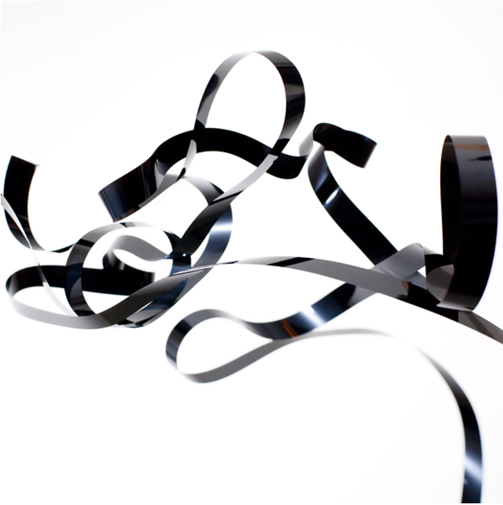

Objekt – Flatland
Geplaatst door: Bucket766 op Augustus 25, 2014
Genre: dance
Het eerste album Flatland van de Berlijnse producer en muzieksoftwaremaker TJ Hertz ademt weliswaar veel elektronische muziekgeschiedenis, maar weet toch ook een heel nieuw dancegevoel op te roepen, dankzij een technisch razend knap en misschien juist daardoor herkenbaar eigen geluid. Natuurlijk waart de geest van Drexciya rond in de futuristische en opwindende sciencefiction-electro van Ratchet, een afgetekend hoogtepunt van de plaat. En ja, we horen de weidse technotrance van onze eigen Speedy J in het strenge Dogma, dat de dansvloer kan laten dreunen in een trage maar ongelooflijk zware bassdrum. Hertz kleurt zijn dansritmes in met vervreemdende, krassende en rafelige ambient- en spacegeluiden, alsof die komen aangezeild vanaf een ontploft ruimtestation. Daarmee geeft hij niet-dansbare tracks als First Witness en het onnavolgbare One Stitch Follows Another een aangename en soms fijn duistere spanning. Dat in de laatste, spookachtige track Cataracts tóch nog een retro-vocodertje komt aangewaaid: het zij hem vergeven. (tekst: Robert van Gijssel , de Volkskrant)
Hertz kleurt zijn dansritmes in met vervreemdende, krassende en rafelige ambient- en spacegeluiden, alsof die komen aangezeild vanaf een ontploft ruimtestation.